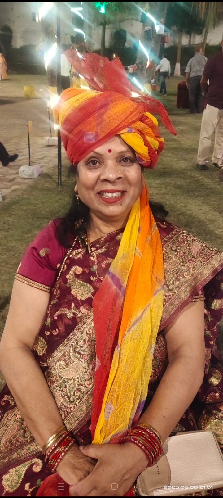

एक जीवन, अनेक प्रेरणाएँ
शिक्षा, संस्कार, वैदिक विचारधारा, परिवार, सेवा और आर्य समाज के मूल्यों से जुड़ी एक प्रेरणादायक डिजिटल विरासत।
डॉ. आराधना का जन्म 11 दिसंबर 1965 को राजस्थान के ऐतिहासिक नगर अजमेर में हुआ। उनका पालन-पोषण एक अत्यंत आध्यात्मिक, संस्कारित एवं वैचारिक वातावरण में हुआ। उनके पिता प्रोफेसर बुद्धिप्रकाश आर्य आर्य समाज के प्रख्यात विद्वान थे तथा माता श्रीमती सुशिला देवी सक्सेना भी आर्य समाज के आदर्शों एवं मूल्यों से गहराई से जुड़ी हुई थीं।
बचपन से ही डॉ. आराधना को सत्य, अनुशासन, सादगी और सेवा के संस्कार प्राप्त हुए। विशेष रूप से उनके पिता का सात्विक जीवन, आदर्श आचरण और समाज के प्रति समर्पण उनके व्यक्तित्व के निर्माण में अत्यंत महत्वपूर्ण रहा।
बचपन से ही डॉ. आराधना को अध्यापिका बनने का विशेष शौक था। वे अपनी माता जी की साड़ी पहनकर घर की छत पर बच्चों को एकत्रित करतीं, हाथ में डंडा लेकर कक्षा का वातावरण बनातीं और कहा करतीं —
“बच्चों, चुप हो जाओ... आपकी आराधना मैम आ गई हैं।”
प्राथमिक कक्षा में होते हुए भी उनके भीतर नेतृत्व और संस्कारों के प्रति विशेष आग्रह था। यदि परिवार में कोई छोटा सदस्य बड़ों को नाम लेकर बुलाता, तो वे आदेश निकालतीं कि सभी बड़े भाई-बहनों को भैया, दीदी या सम्मानजनक संबोधन से पुकारा जाएगा, अन्यथा 50 रुपये का जुर्माना लगेगा।
चौथी कक्षा से लेकर एम.ए. तक डॉ. आराधना ने वाद-विवाद प्रतियोगिताओं में भाग लिया। उन्हें साहित्य पढ़ना, महापुरुषों की जीवनियाँ, शहीदों के त्याग और राष्ट्रनायकों के चरित्र का अध्ययन करना अत्यंत प्रिय रहा।
उनके जीवन पर सबसे गहरा प्रभाव स्वामी दयानंद सरस्वती का पड़ा। “सत्यार्थ प्रकाश” का अध्ययन उनके जीवन का एक महत्वपूर्ण मोड़ सिद्ध हुआ। बचपन में ही उन्होंने भगवद्गीता, रामायण और महाभारत जैसे ग्रंथों का अध्ययन किया।
डॉ. आराधना की प्रारंभिक शिक्षा अजमेर के एक राजकीय विद्यालय से हुई। उन्होंने कभी किसी निजी अथवा अंग्रेज़ी माध्यम विद्यालय में अध्ययन नहीं किया। उनकी संपूर्ण शैक्षणिक यात्रा हिंदी माध्यम से संपन्न हुई।
उन्होंने स्नातक और स्नातकोत्तर की शिक्षा राजकीय महाविद्यालय, अजमेर से प्राप्त की। इसके पश्चात उन्होंने जियालाल शिक्षण प्रशिक्षण संस्थान, अजमेर से बी.एड. तथा क्षेत्रीय शिक्षण महाविद्यालय, अजमेर से एम.एड. की उपाधि प्राप्त की। आगे चलकर उन्होंने दो विषयों में पीएच.डी. की उपाधि अर्जित की।
डॉ. आराधना ने वर्ष 1986 में बी.एड. व्याख्याता के रूप में अपनी सेवा यात्रा प्रारंभ की। इसके पश्चात उन्होंने विभिन्न शिक्षण संस्थानों में प्रधानाध्यापक के रूप में सफलतापूर्वक सेवाएँ प्रदान कीं। लगभग चार दशकों तक शिक्षा, अनुशासन, संस्कार और समाज निर्माण के क्षेत्र में योगदान देने के उपरांत वे दिसंबर 2025 में राजपत्रित अधिकारी के रूप में सम्मानपूर्वक सेवा निवृत्त हुईं।
डॉ. आराधना का विद्यार्थियों के साथ संबंध अत्यंत मित्रवत, सुखद, स्नेहपूर्ण और आत्मीय रहा है। विद्यार्थियों ने उन्हें सदैव अपार सम्मान और प्रेम दिया, और उन्होंने भी विद्यार्थियों को केवल विद्यार्थी नहीं, बल्कि अपने परिवार का हिस्सा समझा।
वे बच्चों के साथ बच्चों जैसी सहजता से जुड़ जाती थीं। मध्यावकाश के समय जब बच्चे भोजन के बाद खेलने लगते, तब वे कई बार अपना भोजन छोड़कर बच्चों के साथ खेलने चली जाती थीं।
उनके अनुसार शिक्षा व्यक्ति के सर्वांगीण विकास का सशक्त माध्यम है। शिक्षा केवल डिग्री नहीं, बल्कि जीवन भर चलने वाली प्रक्रिया है।
डॉ. आराधना के जीवन में यज्ञ और हवन केवल धार्मिक अनुष्ठान नहीं हैं, बल्कि वैदिक जीवनशैली का आधार हैं। वे हवन एवं यज्ञ की विधि को भली-भाँति जानती हैं और जीवन के प्रत्येक महत्वपूर्ण अवसर पर यज्ञ को आवश्यक मानती हैं।
बच्चों के संस्कारों से लेकर जन्मदिवस, पुण्यतिथि, वर्षगाँठ, मुंडन, होली, दीपावली तथा अन्य पारिवारिक एवं सांस्कृतिक अवसरों पर वे नियमित रूप से यज्ञ एवं हवन का आयोजन करती हैं।
डॉ. आराधना वर्ष 1986 से निरंतर आर्य समाज से जुड़ी हुई हैं। वर्तमान में वे आर्य समाज में संयुक्त मंत्री के दायित्व का निर्वहन कर रही हैं। इससे पूर्व भी वे विभिन्न पदों पर रहकर अपनी सेवाएँ प्रदान कर चुकी हैं।
आर्य समाज के माध्यम से उन्होंने अनेक सामाजिक, सांस्कृतिक एवं वैदिक कार्यक्रमों के आयोजन में महत्वपूर्ण भूमिका निभाई है। वे योग शिविरों, वैदिक कार्यक्रमों, यज्ञों, वार्षिक उत्सवों तथा जागरण अभियानों से सक्रिय रूप से जुड़ी रही हैं।
आर्य समाज में ऋषि बोधोत्सव, आर्य समाज स्थापना दिवस, स्वामी दयानंद जयंती, वेदोत्सव, यज्ञ महोत्सव तथा वार्षिकोत्सव जैसे पर्व बड़े हर्षोल्लास, वैदिक यज्ञों, प्रवचनों और सामाजिक कार्यक्रमों के साथ मनाए जाते हैं।
वे विभिन्न विद्वानों, उपदेशकों तथा भजनोपदेशकों को आमंत्रित कर वैदिक विचारधारा और सामाजिक जागरूकता के प्रसार का कार्य करती हैं। उनके अनुसार आर्य समाज व्यक्ति को तर्क, सत्य, अनुशासन, आत्मविकास और राष्ट्र निर्माण की प्रेरणा देता है।
डॉ. आराधना के जीवन में परिवार केवल संबंधों का समूह नहीं, बल्कि प्रेम, संस्कार, सहयोग और जीवन मूल्यों की आधारशिला है। इस section में प्रत्येक पारिवारिक संबंध की अलग भावनात्मक कहानी जोड़ी जाएगी।
परिवार की स्मृतियाँ देखेंयात्राएँ केवल स्थान देखने का माध्यम नहीं होतीं, बल्कि जीवन को नए अनुभव, नई दृष्टि और नई प्रेरणा देती हैं। इस section में डॉ. आराधना की यात्राओं, स्मृतियों और उनसे मिली सीख को जोड़ा जाएगा।
यात्रा स्मृतियाँ देखेंयह section password protected होगा।